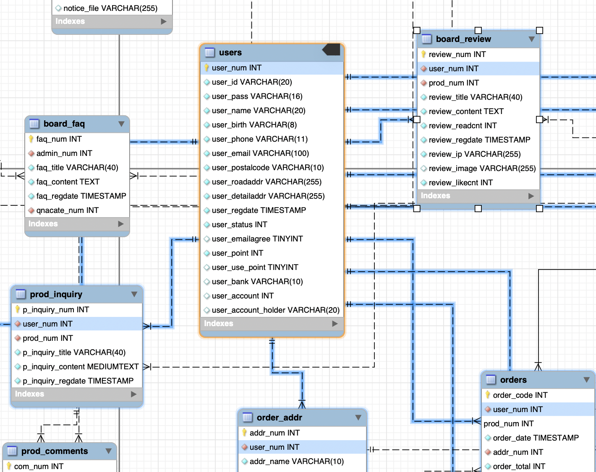
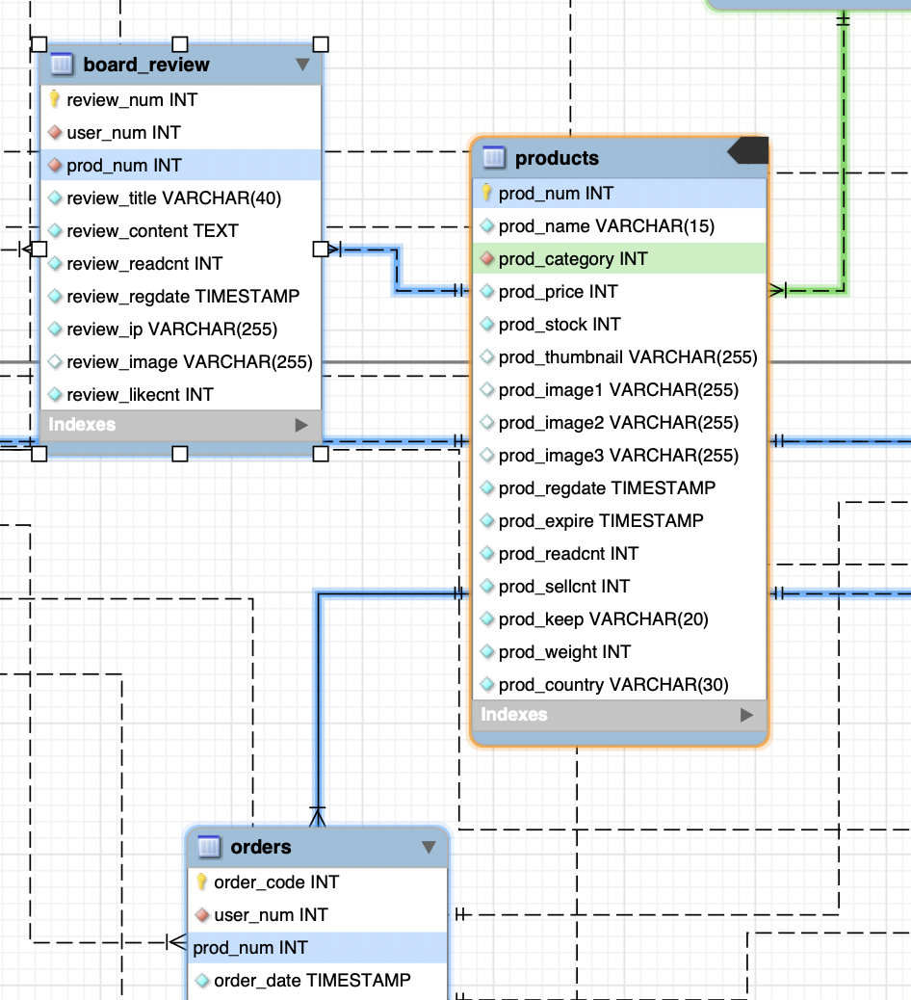
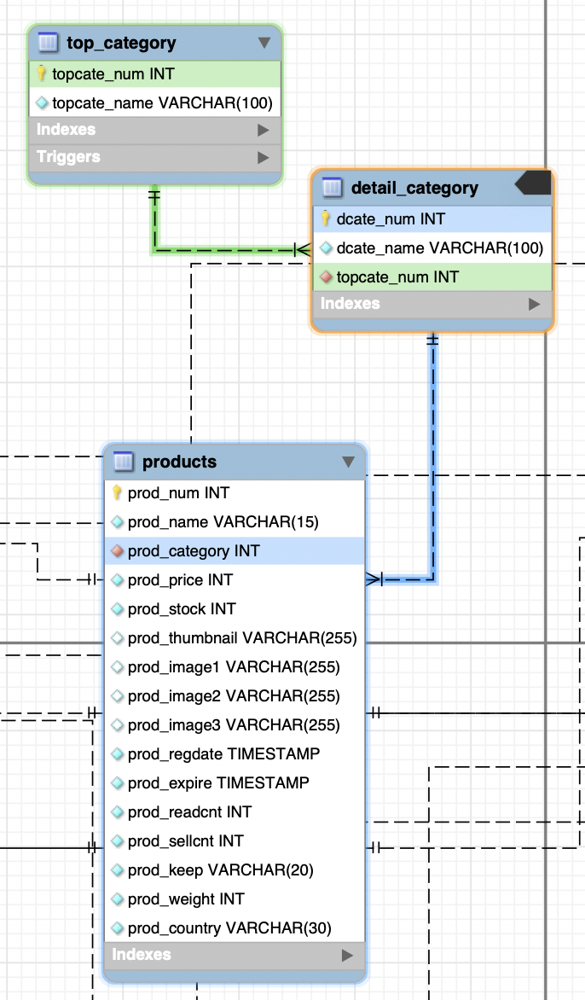
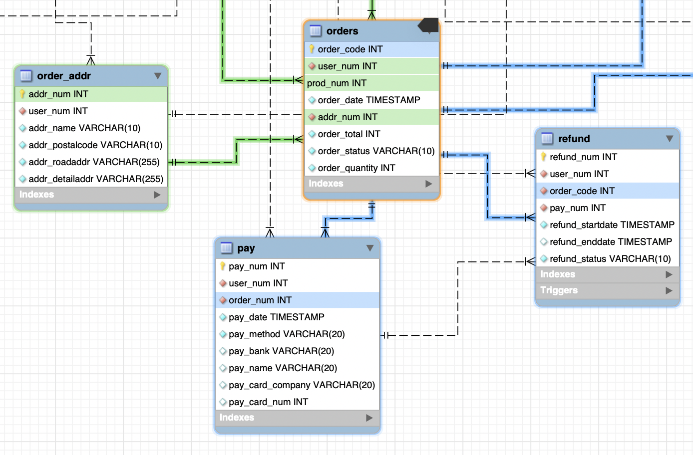
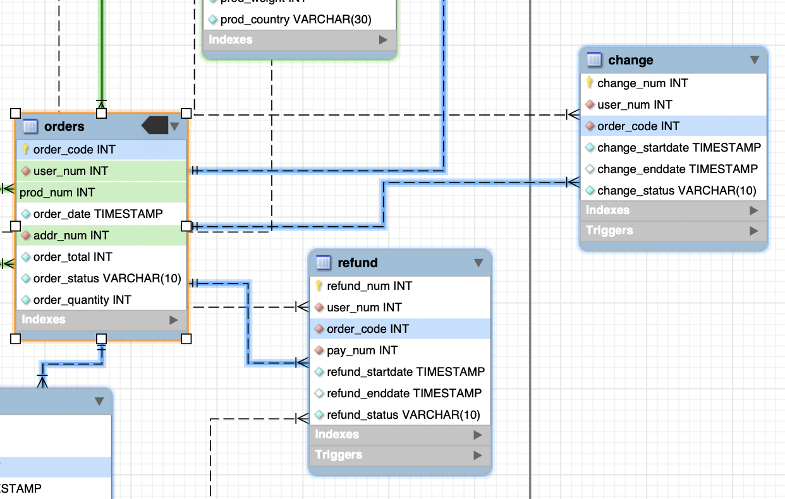
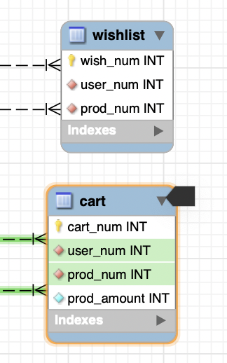
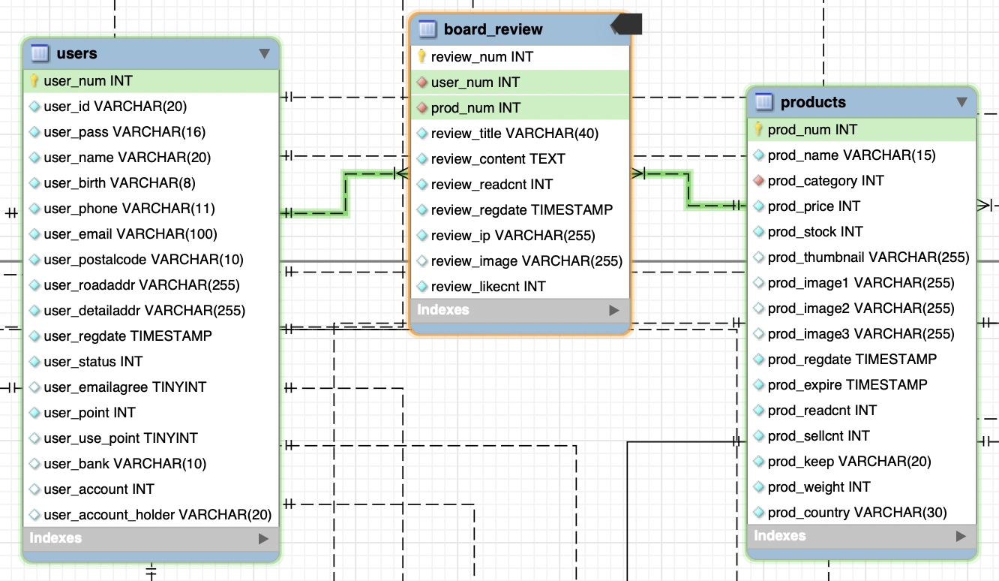
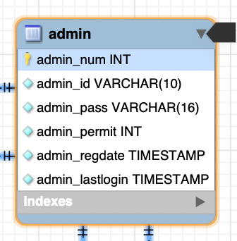
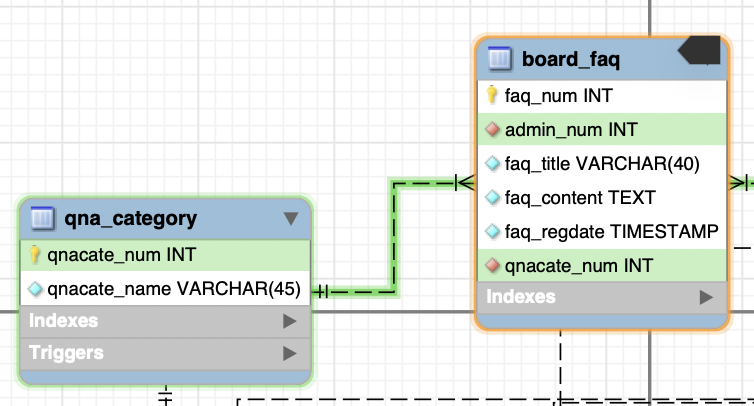
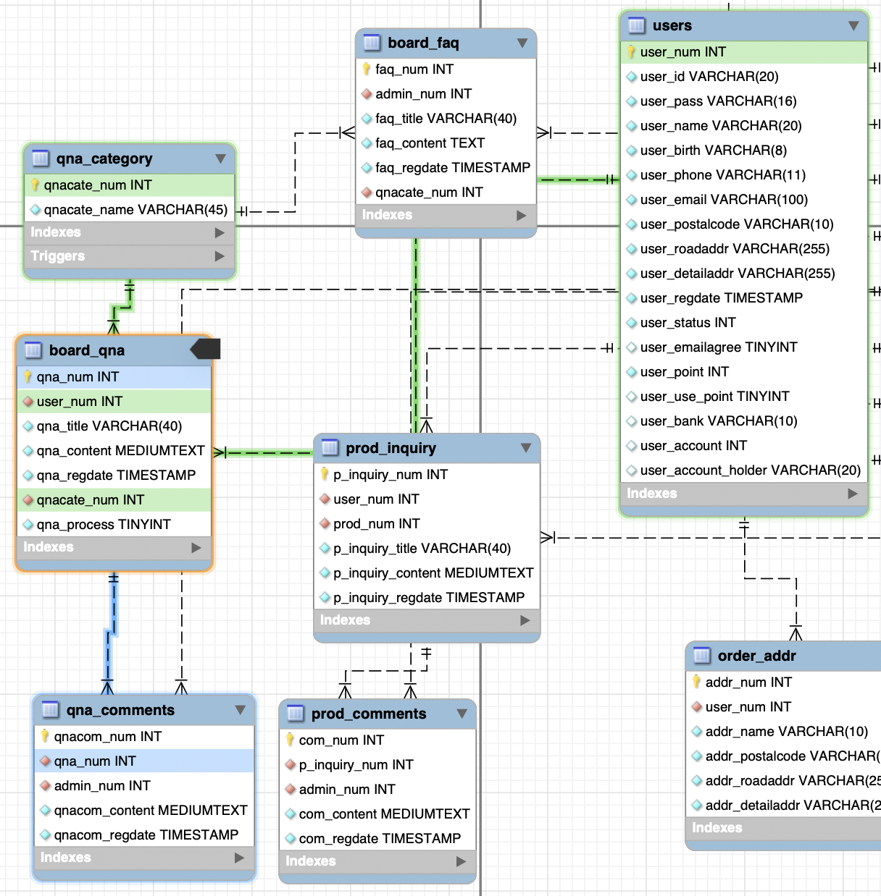

JAVA Spring) 1인가구를 위한 쇼핑몰 Uno más 개발일지 7 - 쇼핑몰 RDBMS 설계 및 생성
- 작성일 : 2022.05.01
-
작성자 : 황유진
- 팀원 : 김진영, 박승지, 반현빈, 오성은, 오은현, 윤정환, 황유진
- 팀장 : 황유진
- 부팀장 : 오성은
- GitHub Repository : https://github.com/miro7923/Uno-Mas
개발환경
- MacBook Air (M1, 2020)
- OpenJDK 8
- Spring Tool Suite 4.14.0
- Spring framework 4.3.1.RELEASE
- Tomcat 8.5
- MySQL Workbench 8.0.19
기간
- 2022.4.13 ~ 2022.5.20
주제
- 웹 백엔드 수업 중 마지막 과제로 팀 프로젝트를 진행하게 되었다.
- 조건은
Spring기반으로 웹 사이트를 제작하는 것이다. - 총 팀원은 7명이며, 우리 팀은
1인 가구를 위한 쇼핑몰을 주제로 정했다. - 팀 이름으로 정해진
Uno más는 스페인어로하나 더라는 뜻이다.
진행상황
- 프로젝트의 시작부터 부팀장인
오성은과 함께 설계해 오던 DB 테이블을 드디어 마무리 하고 생성했다. - 이번주부터 백엔드 작업에 들어갈 것이기 때문에 생성된 DB 테이블이 필요했다.
쇼핑몰 DB 테이블 1~n차 설계와 고난
-
우리의 프로젝트가 3주차에 접어들며 그동안 3번의 회의가 있었다. 회의가 진행될 때마다 새롭게 추가되는 사항이 생겼기 때문에 매주 회의가 끝나면 설계했던 DB 테이블을 수정할 필요가 있었다. 정기 회의가 아니어도 꽤 큰 규모의 DB 테이블을 설계하는 것이 처음이었기 때문에 꽤 자주 수정했던 것 같다.
-
설계 과정에서 어려웠던 점은 주문 테이블의 설계였다.
- 왜냐하면 회원 한 명이 여러 개의 상품을 주문했을 때 그 상품정보들을 어떻게 저장해야 할 지 감이 오지 않았기 때문이다.
- 일반적인 프로그래밍 언어를 사용해 상품 목록을 관리하면 배열을 만들어 담으면 되는데 DBMS는 그렇지가 않잖아…? 😟 테이블에서 배열 형태를 어떻게 구현하느냐가 최대 난제였다.
- 이를 해결하기 위해 함께 DB를 설계하던 부팀장과 많은 의견을 주고 받았다.
1차로 채택된 의견
- 테이블에서
PK로 사용할 인덱스 번호 컬럼(AI)과 주문코드를 저장할 컬럼을 만든다. - 주문이 생기면 한 주문에서 생성된 모든 상품 정보를 주문 테이블에 저장한다. 만약 회원이 딸기, 바나나, 포도 3가지 상품을 주문했다면 각 상품 정보를 담은 로우를 생성하는 것이다. 그리고
PK인 인덱스 번호는 자동으로 1씩 증가되어 각 로우는 1,2,3이라는 인덱스값을 가지게 될 것이다. - 방금 생성된 주문은 하나의 주문이기 때문에 세 상품들은 같은 주문코드를 참고해야 한다. 각 로우의 주문코드 컬럼에는 같은 주문코드를 넣어준다.
-
DB에서 주문정보를 조회할 때엔 주문코드 필드값을 이용해 가져온다.
- 다소 복잡한 느낌이 있지만 이 정도면 논리적이라고 생각했다.
2차로 채택된 의견
- 최종 결정하기 전에 이것이 최선일지 경험자의 의견을 듣고 싶어서 학원에서 데이터베이스 수업을 담당하고 계신 강사님한테 여쭤봤다.
- 강사님은 주문코드와 상품번호를 복합키로 사용해라는 의견을 주셨다. 주문코드는 주문내역을 조회할 때 다른 테이블에서 참조되어야 하기 때문에
PK로 설정되어야 하는데 이것 하나만PK로 사용하게 되면 주문코드를 여러 로우에 중복해서 넣을 수 없으니까 상품번호도 함께PK를 걸어서 복합키로 사용하라는 것이다. 그리고 주문내역을 조회할 때엔where절에 주문코드를 기준으로select하는 것이다. - 오.. 우리가 생각했던 흐름과 비슷하면서도 역할이 비슷한 컬럼의 수를 줄일 수 있는 방법이었다. 그래서 주문코드와 상품번호를 복합키로 지정했다.
- 테이블을 생성한 뒤 데이터를 삽입하고 조회해 보니까 의도대로 조회가 잘 된다…!
완성된 EER 다이어그램

테이블 관계
회원 테이블

- 회원의 정보를 저장할
user테이블은 회원번호를PK로 가진다. - 한 명의 회원은 배송지 목록 테이블을 여러 개 가질 수 있다.
- 한 명의 회원은 주문을 여러 개 가질 수 있다.
- 한 명의 회원은 구매를 여러 개 가질 수 있다.
- 한 명의 회원은 후기글을 여러 개 가질 수 있다.
- 한 명의 회원은 여러 개의 장바구니 번호를 가질 수 있다.
- 한 명의 회원은 여러 개의 위시리스트 번호를 가질 수 있다.
상품 테이블

- 상품의 정보를 저장할
products테이블은 상품번호를PK로 가진다. - 상품 테이블은 여러 주문에 참고될 수 있다.
- 상품 테이블은 여러 후기에 참고될 수 있다.
상품 카테고리 테이블

- 상품 카테고리 테이블은 대분류와 소분류를 저장할 테이블로 나누었다.
- 상품 테이블에서는 이를 참조해 사용자 화면에 정렬하여 출력할 것이다.
주문 테이블과 결제 테이블

- 주문 정보를 저장할 테이블
orders는 주문번호와 상품번호를PK로 가진다. - 주문을 한 회원정보와 주문된 상품정보를 알아야 하기 때문에 회원번호와 상품번호를
FK로 가진다. - 주문 테이블은 배송지 주소 정보도 알아야 하기 때문에 회원 한 명의 배송지 정보를 저장할 테이블
order_addr의PK를FK로 가진다. - 결제 테이블인
pay는 위에서 생성된 주문의 결제 정보를 저장한다. 때문에 회원정보와 주문정보를 참조한다.
환불과 교환 테이블

- 둘 다 원 주문정보가 필요하기 때문에 주문 테이블을 참조한다.
배송 테이블

- 배송에 필요한 회원정보, 주문정보, 배송지 정보를 참조한다.
- 배송이 완료되면 해당 데이터는 배송 완료 테이블에도 등록된다.
장바구니와 위시리스트 테이블

- 회원정보와 상품정보를 참조하여 회원 한 명의 장바구니 데이터를 저장한다.
리뷰 게시판

- 상품 하나에 대한 후기 데이터를 저장할 테이블이다.
- 회원과 상품 테이블을 참조한다.
상품 문의와 그에 대한 댓글 게시판

- 상품 하나에 대한 문의 데이터를 저장할 테이블이다.
- 회원과 상품 테이블을 참조한다.
- 상품 문의에 대해 관리자가 댓글로 답변을 달 것이라서 상품 문의 테이블을 참조하는 댓글 테이블
prod_comments도 만들었다.
관리자 테이블

- 관리자의 계정정보를 저장할 테이블이다. 쇼핑몰의 규모가 커지면 관리자가 여러 명 생기게 될 것이라서 따로 만들었다.
공지사항 게시판

- 고객센터에 있는 공지사항 게시판에는 관리자만 글을 쓸 수 있기 때문에 관리자 테이블을 참조한다.
자주 묻는 질문 게시판

- 자주 묻는 질문 또한 관리자만 작성할 수 있기 때문에 관리자 테이블을 참조한다.
- 자주 묻는 질문은 카테고리별로 모아볼 수 있는 기능을 제공하기 위해 전용 카테고리 테이블
qna_category이 존재한다.
1:1 문의 게시판

- 사용자가 남긴 1:1 문의 데이터를 저장하는 테이블이다.
- 여기에도 관리자가 댓글을 답변하는 형태로 구현할 것이라서 전용 댓글 테이블
qna_comments가 존재한다. - 1:1 문의시 문의 카테고리별 담당자가 모아볼 수 있도록 카테고리 테이블을 참조한다.
참고
마감까지
D-19